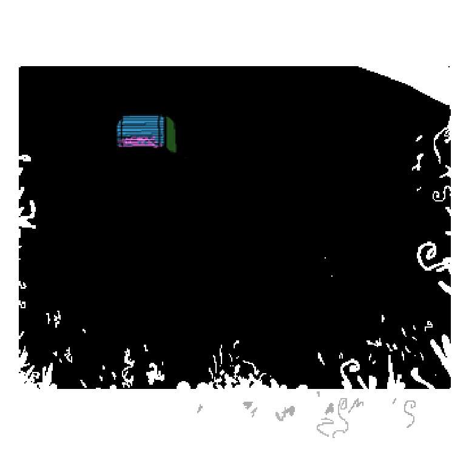

And outside is the pale grove from which it originates.
And so you walk forward, curious. Meeting the brightness of outside the room. This is unique compared to what you previously saw of the world through the window. As you step onto the grass below, you are able to feel it swaying in the wind, brushing against your planted feet, an actual sensation in the light.
It feels nice being able to see and feel, it seems safe now. There's perhaps a chance that whatever bothered you could have come from here, but you don't see anything suspicious, so you relax.
You close your eyes
and it happens again- Oh, no, thankfully that was just the breeze.
Nothing to worry about...
No. What's going on?
Your voice echoes softly throughout the grove.
Not long after you can hear some nearby grass begin to rustle in response, sounds like.. walking.
Someone's here! Someone heard you!
A cloaked figure from out of view enters yours, they were walking uphill.
Ah! I see you!
How long have you been out here?
It's sudden but they don't seem to be mad, so while you tense up, you still reply
I.. don't know, hard to tell.
You too? that's worrying. I can't seem to be able to find my way around here, among other things, so I (might) be lost.
Do you know where mom and father are?
Oh.. right..
You grab your footing, it's practically a conversation now.
Well, I can't say I know for sure, but they must be out late again. Like usual.
Figures...
Should maybe figure out what dinner will be then. been hungry for what's felt like hours. And it seems like it's up to us to do something about it.
We can probably find something edible in the fridge? I mean cranberry juice sounds good, maybe a sandwich. But I suck at spreading the mayo...
You get up from the couch and walk to the kitchen, each step is kinda wobbly, and the room is dark so you can't see where you're going very well, but you make it there shortly.
Standing beneath a lone kitchen light; Which was left on since both your parents left. You sit down at the table next to the fridge for a minute.
...It feels unsafe, why would they leave me at home with _____ and not feed us before they left? Was I asleep that long?
I think maybe they just.. it'll be okay, they'll be back soon, like this never happened, they'll say sorry and it'll be okay.
They do that a lot...
Yeah, sorry fixes everything.. I think
Yeah, I'm thankful that they care about me
The sounds of people driving by in their cars outside reach inside the house through the open windows near you, they're playing loud music, joys of city life.
You get up from your seat and open the fridge to grab something to eat: You grab some ingredients to make a simple sandwich and the jug of cranberry juice. You get yourself a mug too from the dish rack, pouring cranberry juice into it, it's your favourite. And set the sandwich thingies onto the marble counter.
You make a basic sandwich with two slices of meat and one slice of cheese, no mayonnaise to it, father would usually be the one to do that for you. Usually they cut it for you too with a knife, but you're not allowed to use knives (yet), so you have to eat it as a whole.
It doesn't taste as good as you'd like, but it's something... You sit back down, taking a few bites of your food and sips of your drink.
You're not as hungry now! But your mouth is quite dry. Not really thinking too much about it.
You go and lie down on the couch like before, and hear a car pull into the driveway outside.
Prolly them..
Father was first to the door, he unlocks it and comes inside, then mom follows, but father looks toward the kitchen instead of you, and his expression changes, frustrated.
He walks to the kitchen and raises his voice from inside of it, telling you that you left the bread out on the table (opened) and that you didn't clean up your mess, there's crumbs where you ate cause you didn't grab a plate.
Why's he upset at me..
I don't know. Um I think I forgot to put some things back?
Frick
But he's more worried about that than me?
He goes to where you're laying and tries to 'wake you up' because he thinks you're sleeping. And tells you what he just said, and that the mess has to be cleaned up.
You apologize and get up to take care of it like he asked. Picking up crumbs and putting things you took out back away, then you're allowed to lay down again, but now the TV's on. It's a bit too loud to be able to sleep with it on in the same room, so you go to your room instead, to lay down in your bed.
Father tells you "love you son, sorry I got upset".
And you tell him it's fine, from across the house. In the room you sleep in you can see _____'s still in her bed, asleep,
I think that fixed it, but I'm not sure why he wasn't worried
You're shaking...
I think something's gotten into him.. again. we should leave him alone and calm down...
...Do you want to walk around for a bit?
Yeah, please.
You and them walk around the grove through the grass, moving downhill, you realize just how wide this 'place' reaches. There's a shoreline in the direction you're headed.
Do you got a name?